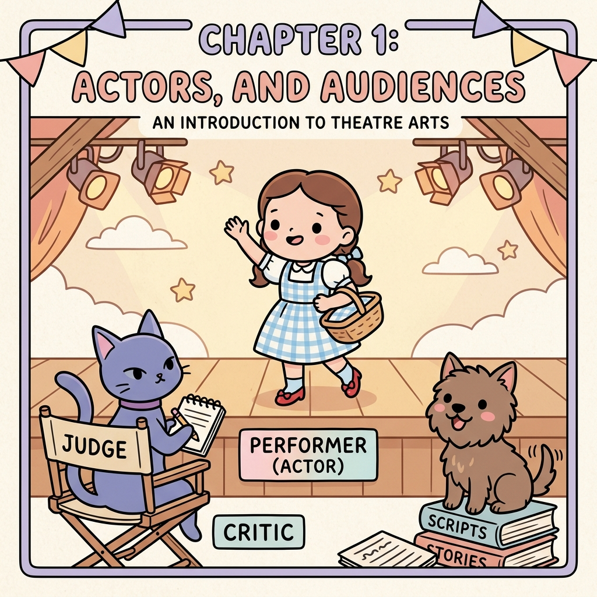
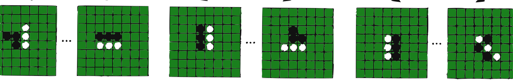
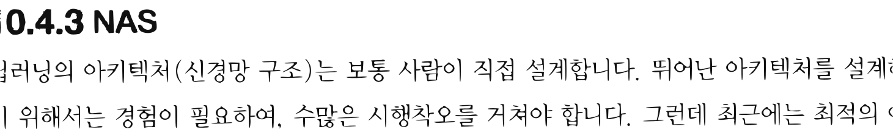
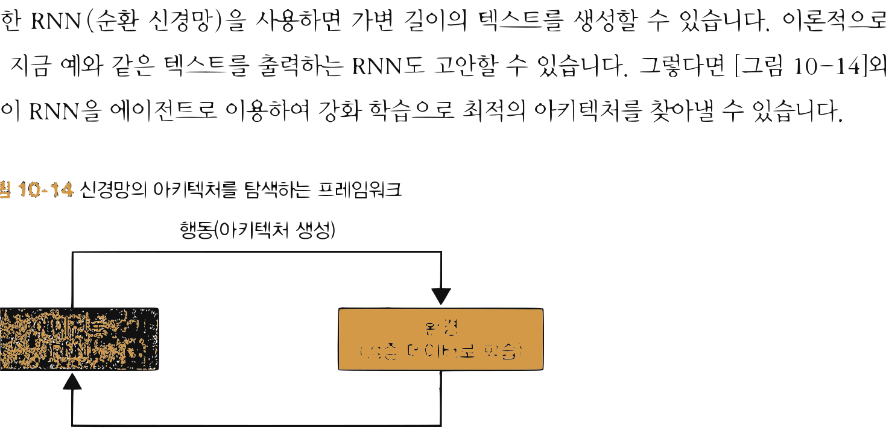

14.4 사례 연구
그림 14-4 바둑판(알파고), 로봇 제어, 반도체 칩 설계 등 현실 및 가상 세계의 정복 사례들을 칠판에 붙이며 설명해주는 지니와 눈이 반짝이는 도로시

인공지능 연구가 실생활에 적용되어 기적 같은 혁신을 불러일으킨 역사적 사례 연구(Case Study)들을 꼼꼼하게 해부합니다. 이세돌 9단과의 바둑 대결을 승리한 알파고(AlphaGo)의 몬테카를로 트리 탐색(MCTS) 결합 메커니즘부터 실제 로봇 물리 제어, 아키텍처 자동 설계(NAS), 심지어 에너지 효율화 시스템까지 강화학습이 도달한 위대한 정점들을 지니와 도로시의 대화로 생생하게 들어봅시다!
딥러닝 사례로는 비디오 게임이나 바둑과 같은 보드 게임이 유명하지만 그 외에도 로봇 제어, 자율주행, 의료, 금융, 바이오 등 다양한 분야에서 성과를 거두고 있습니다. 이번 절에서는 딥러닝이 어떤 용도로 활용되는지를 보여드릴 겸, 유명한 사례를 몇 가지 소개하겠습니다.
14.4.1 보드 게임
바둑, 장기, 오셀로 등의 보드 게임은 다음과 같은 특성을 지니고 있습니다.
- 보드의 모든 정보를 알 수 있음(완전 정보)
- 한쪽이 승리하면 다른 쪽은 패배함(제로섬zero-sum)
- 상태 전이에 우연이라는 요소가 없음(결정적)
이런 성질을 지닌 게임에서 중요한 것은 ‘수 읽기’입니다. “내가 이 수를 두면 상대가 저 수를 둘 것이고, 그러면 나는 이 수로 받아칠 것이다”처럼 앞으로 일어날 일을 다양하게 예측해볼수록 더 좋은 수를 찾을 수 있습니다. 보드 게임에서 ‘수 읽기’는 [그림 14-12]처럼 트리 구조로 표현할 수 있습니다.
그림 14-12 오셀로를 예로 든 게임 트리

오셀로판의 수 읽기 트리그림과 같이 보드를 노드로, 다음 수를 에지(화살표)로 표현한 것을 게임 트리game tree라고 합니다. 게임 트리를 모두 펼칠 수 있다면 가능한 모든 결과가 드러나기 때문에 최선의 수를 찾을 수 있습니다. 하지만 바둑이나 장기는 가능한 상태(돌이나 말을 배치하는 패턴)가 천문학적으로 많아서 게임 트리를 모두 전개하기가 현실적으로 불가능합니다. 따라서 문제를 풀려면 게임 트리를 효율적으로 탐색해야 합니다.
[!NOTE] 게임 트리에서 가능한 상태(노드)의 수는 보드 게임마다 다릅니다. 오셀로는 $10^{58}$개, 체스는 $10^{123}$개, 장기는 $10^{226}$개, 바둑은 $10^{400}$개입니다.
몬테카를로 트리 탐색Monte Carlo Tree Search (MCTS)은 트리의 전개를 몬테카를로법으로 근사하는 기법입니다. 예를 들어 돌들이 특정 형태로 놓여 있는 보드 상태가 얼마나 좋은지 평가할 때, 돌을 무작위로 두는 두 플레이어에게 승패가 결정될 때까지 계속 두게 합니다. 이러한 시도(특정 상태의 보드에서 시작하는 게임)를 수차례 반복하여, 그 승률로 해당 보드 상태가 ‘얼마나 좋은가’를 근사적으로 나타냅니다. 이처럼 승패가 결정될 때까지 무작위로 게임을 진행시키는 일을 플레이아웃playout 또는 롤아웃rollout이라고 합니다.
몬테카를로 트리 탐색은 현재의 보드 상태에서 가능한 모든 수를 각각 평가하고, 그 결과를 토대로 다음 수를 결정하는 흐름으로 진행합니다. 그리고 일반적으로는 이 기본 아이디어에 더하여 유망해 보이는 보드 상태로 전개한 후 평가한 결과를 피드백하는 메커니즘이 보강됩니다. 몬테카를로 트리 탐색에 대한 자세한 내용은 해당 논문[34]을 참고하기 바랍니다.
알파고
알파고AlphaGo [35]는 몬테카를로 트리 탐색에 심층 강화 학습을 결합한 기법입니다. 2016년 세계 최고의 바둑 기사에게 승리를 거두며 세상을 놀라게 한 주인공이죠.
알파고에는 두 개의 신경망이 사용되는데, 하나는 현재 바둑판에서 이길 확률을 평가하는 Value 신경망이고 다른 하나는 정책을 나타내는 Policy 신경망입니다. Policy 신경망은 다음에 둘 수를 확률로 출력합니다. 예를 들어 (1, 1) 위치에 둘 확률은 2.4%, (1, 2) 위치에 둘 확률은 0.2%와 같은 식이죠. 이 두 신경망으로 몬테카를로 트리 탐색을 더 정밀하게 수행할 수 있게 되었습니다.
알파고는 인간의 기보 데이터를 이용해 두 신경망을 학습시켰습니다. 그런 다음 셀프 플레이self-play 형태로 대국을 반복하고 여기서 수집한 경험 데이터를 사용해 학습을 더욱 강화했습니다.
[!NOTE] 셀프 플레이는 강화 학습의 틀 안에서 설명할 수 있습니다. 바둑을 두는 ‘에이전트’가 있고 에이전트의 복제체인 대전 상대가 ‘환경’ 역할을 합니다. 이 둘이 상호작용하면서 최종적으로 승리 혹은 패배라는 보상을 얻습니다. 이처럼 환경 속에서 상호작용하며 데이터를 수집한다는 점에서 알파고가 활용한 방식은 강화 학습이라고 말할 수 있습니다.
알파고 제로
알파고는 인간의 기보를 학습 데이터로 사용했습니다. 하지만 알파고 제로AlphaGo Zero [36]는 학습 데이터를 전혀 사용하지 않고 셀프 플레이를 통한 강화 학습만으로 학습했습니다. 또한 알파고에서 사용하던 ‘도메인 지식(바둑 규칙)’을 이용하지 않은 점도 큰 특징입니다. 이 외에도 다음과 같은 점을 개선했습니다.
- Policy 신경망과 Value 신경망을 하나의 신경망으로 표현
- 몬테카를로 트리 탐색으로 플레이아웃하지 않고, 신경망의 출력만으로 각 노드(상태)를 평가
이처럼 기존 알파고보다 단순하고 범용적으로 개선했습니다. 더구나 인간이 쌓아둔 기보 데이터 없이 강화 학습만으로 학습했음에도 놀랍게도 기보 데이터를 활용한 알파고를 압도하는 성능을 보여줬습니다. 실제로 알파고와의 대국에서 100대 0으로 압승을 거뒀습니다.
[!NOTE] 인간의 지식을 활용하는 지도 학습이 도달할 수 있는 수준은 학습 데이터에 반영된 인간의 실력까지입니다. 한편 강화 학습은 스스로 새로운 경험을 쌓아가며 학습하기 때문에 이런 한계가 없습니다. 이론적으로는 인간을 뛰어넘을 수 있는 것이죠. 실제로 알파고 제로는 인간의 수준을 한참 넘어섰습니다. 그래서 알파고 제로 또한 강화 학습의 가능성을 보여준 중요한 연구입니다.
알파제로
알파제로AlphaZero [37]는 알파고 제로를 미세하게 조정한 것이지만 거의 같은 알고리즘을 이용합니다. 그럼에도 바둑뿐 아니라 체스와 장기까지 둘 수 있습니다. 보드 게임의 종류에 상관없는 범용 알고리즘으로 진화한 것입니다.
14.4.2 로봇 제어
딥러닝은 로봇 제어와 같은 시스템에도 활용됩니다. 하나의 예로, 구글은 로봇 팔이 다양한 물건을 잡을 수 있도록 학습시키는 데 성공했습니다.[38] [그림 14-13]과 같이 로봇은 위쪽에 장착된 카메라가 보내주는 영상을 해석하여 어떻게 행동할지를 결정합니다. 행동의 결과로 물체를 잡으면 성공, 잡지 못하면 실패라는 보상을 줍니다. 이처럼 강화 학습의 틀 안에서 학습을 진행합니다.
그림 14-13 일곱 대의 로봇이 경험 데이터를 수집하는 모습[38]

실제 로봇 팔 7대가 물건들을 집어 올리려고 하는 실험 현장 사진필요한 데이터는 그림과 같이 로봇 일곱 대를 수개월 동안 실제 운용하여 수집했습니다. 이때 QT-Opt라는 강화 학습 알고리즘을 이용했습니다. QT-Opt는 Q 러닝 기반이기 때문에 오프-정책 기법입니다. 과거에 얻은 경험 데이터도 활용한다는 뜻이죠. 로봇을 실제로 운용해야 하는 환경이라면 데이터 수집 비용이 많이 들기 때문에 과거 데이터를 활용할 수 있다는 건 커다란 장점입니다.
논문에 따르면 QT-Opt는 미지의 물건도 96% 확률로 잡는 데 성공하여, 구글이 이전에 개발한 지도 학습 방식보다 실패 확률을 1/5 이하로 줄였다고 합니다.
14.4.3 NAS
딥러닝의 아키텍처(신경망 구조)는 보통 사람이 직접 설계합니다. 뛰어난 아키텍처를 설계하기 위해서는 경험이 필요하여, 수많은 시행착오를 거쳐야 합니다. 그런데 최근에는 최적의 아
키텍처를 컴퓨터가 자동으로 설계하는 연구[39]가 활발히 진행되고 있습니다. 흔히들 NASNeural Architecture Search라고 부르는 분야입니다.
NAS를 수행하는 방법에는 베이지안 최적화Bayesian optimization와 유전 프로그래밍genetic programming 등 여러 가지가 있습니다. 그중 유력한 후보가 강화 학습입니다. 붐을 일으킨 주인공은 「Neural Architecture Search with Reinforcement Learning」 논문[40]입니다. 이 논문에서는 강화 학습으로 신경망 구조를 자동으로 최적화하여 사람이 설계한 것 이상의 아키텍처를 발견하는 데 성공했습니다. 어떻게 해냈는지를 간략하게 알아보겠습니다.
핵심 아이디어는 신경망 아키텍처를 ‘텍스트’로 표현할 수 있다는 점에 주목한 것입니다. 예를 들어 신경망의 아키텍처를 다음 예와 같은 텍스트로 정의할 수 있습니다(가상 포맷입니다).
graph {
node {
input: 'Input1'
output: 'Result ReLU'
op_type: 'Relu'
}
node {
input: 'Result ReLU'
input: 'Input2'
output: 'Output'
op_type: 'Add'
}
...
}
또한 RNN(순환 신경망)을 사용하면 가변 길이의 텍스트를 생성할 수 있습니다. 이론적으로는 지금 예와 같은 텍스트를 출력하는 RNN도 고안할 수 있습니다. 그렇다면 [그림 14-14]와 같이 RNN을 에이전트로 이용하여 강화 학습으로 최적의 아키텍처를 찾아낼 수 있습니다.
그림 14-14 신경망의 아키텍처를 탐색하는 프레임워크

에이전트(RNN) -> 행동(아키텍처 생성) -> 환경(검증 데이터로 학습) -> 보상(인식 정확도) -> 에이전트(RNN)그림과 같이 RNN이 신경망의 아키텍처를 텍스트로 생성합니다. 이 작업이 바로 에이전트의 행동에 해당합니다. 그리고 생성된 아키텍처(신경망)를 검증 데이터로 학습시키고 마지막으로 인식 정확도를 측정합니다. 이 인식 정확도가 보상으로 작용합니다. 논문에서는 REINFORCE 알고리즘으로 RNN의 매개변수를 갱신하였고 그 결과 RNN은 점차 인식 정확도가 더 높은 아키텍처를 출력했습니다.
[!NOTE] 논문에서는 아키텍처의 범위를 제한하는 장치가 마련되어 있습니다. 예를 들어 합성곱 계층의 파라미터를 필터와 스트라이드 크기만으로 제한하고, RNN으로 두 매개변수의 값을 차례대로 출력하게 하는 식입니다.
14.4.4 기타 예시
심층 강화 학습을 적용한 사례는 이 외에도 많습니다. 이번 절에서는 그중 세 가지를 소개하겠습니다.
자율주행
자율주행 자동차를 만들기 위한 연구가 전 세계적으로 앞다투어 이루어지고 있습니다. 대부분은 딥러닝을 활용한 ‘지도 학습’으로 진행되고 있으나 한편으로는 강화 학습으로 접근하는 움직임도 보입니다.[41] 자율주행이라는 문제는 환경을 관찰하여 최적의 행동(브레이크 밟기, 핸들 돌리기 등)을 선택하는 일련의 결정이기 때문에 강화 학습에 잘 들어맞습니다.
강화 학습으로 자율주행에 도전해볼 수 있는 환경으로 AWS DeepRacer[42]가 있습니다. DeepRacer는 딥러닝 기법으로 제어하는 자율주행 레이싱카입니다. 사용자는 딥러닝 알고리즘을 구현하고 보상 함수 등도 직접 설정합니다. 그런 다음 시뮬레이터를 써서 AWS에서 학습시킵니다. 최종적으로 만들어진 모델은 가상 레이스나 실물 자동차 레이스에서 이용할 수 있습니다. 실제로 ‘챔피언십 컵’ 등의 레이스가 정기적으로 개최되어 상금을 걸고 경쟁을 벌이고 있습니다.
건물 에너지 관리
건물은 많은 전력을 소비합니다. 그래서 전력 소비 줄이기가 중요한 과제이지만 건물 내 환경은 매우 복잡하여 효율적으로 운영하기가 쉽지 않습니다. 이 문제를 해결하기 위해 최근 다양한 심층 강화 학습 기법이 제안되어 좋은 성과를 거두고 있습니다.[43]
예를 들어 오피스 빌딩의 공조 설비 운영에 DQN 기반 기법이 제안되었습니다.[44] 이 연구에서는 근무 환경을 쾌적하게 유지하면서 비용을 30% 이상 줄였다고 합니다. 또한 구글의 데이터센터도 냉각 시스템을 머신러닝으로 제어하여 전력 소비를 40%나 줄이는 데 성공했습니다.[45] 여기에도 강화 학습 기법이 일부 사용되었습니다.
반도체 칩 설계
반도체 칩 설계는 작은 기판에 수십억 개 이상의 트랜지스터를 배치하는 일입니다. 복잡한 문제인 만큼 많은 어려움이 따릅니다. 지금까지의 반도체 칩은 숙련된 전문가들이 오랜 시간을 투자해 설계했지만 구글은 딥러닝을 활용한 칩 설계 방법을 새롭게 제안했습니다.[46]
구글의 연구는 반도체 칩 설계를 강화 학습 문제로 간주하고, 에이전트가 다양한 반도체 레이아웃을 시도하며 최적의 설계를 찾습니다. 그 결과, 놀랍게도 6시간 안에 설계를 완료했으며 모든 주요 지표에서 인간 전문가의 설계보다 우수하거나 동등한 성능을 달성했다고 합니다. 이 기술은 이미 구글이 개발하는 TPUTensor Processing Unit 설계에 활용되고 있습니다.*